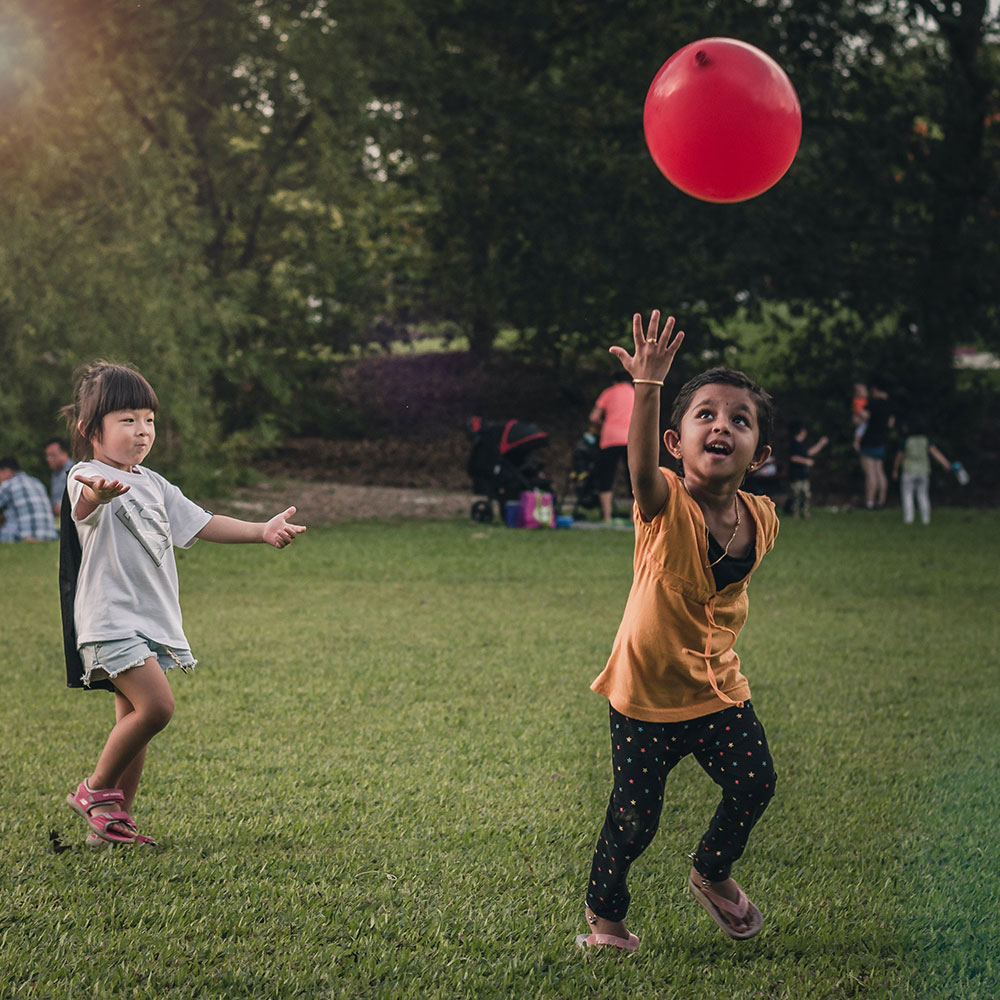

DESIGNING AN APP TO HELP PARENTS MONITOR THEIR CHILDREN'S HEALTH
This was a student group project completed while I was studying for an Advanced Diploma in
User-centred Design at Red & Yellow Creative School of Business. We received the following brief:
1.
Imagine a health and wellness watch app for kids that teaches them healthy habits in a fun, easy and safe way.
2.
The watch app is connected to a smart phone app for parents to track their children’s habit-learning progress
and health data in a way that’s clear and easy to understand.
REQUIREMENTS
Further requirements were that the app needed to
pinpoint the child’s location and set GPS boundaries
keep track of sickness and stress of the child
balance sedative play and active play
link multiple watches to one account
store child’s basic information
set screen-time reminders from the app to be sent to the phone
notify parents about anything to be concerned about
It was important that healthy-habit building would not be based on
reward and discipline motivators
or any calorie tracking – healthy eating habits shouldn’t be about diet but about variance.
But the watch app should make use of gamification, without replacing real-world interaction and play.
The target audience would be four to seven years old, and therefore may not be able to read yet.
As a group, we decided what research and design methods we would use, and then split up to do baseline research.
During our two-week stint, we met up regularly to share our findings and brainstorm ideas.
Once we had agreed on a concept, we created paper wireframes as a group using the Design Studio Method.
Our overall process can be summarised as following:
1.
Baseline research
2.
Competitive analysis
3.
Benchmarking
4.
Heuristic analysis of competitors’ apps
5.
Design research
6.
Personas & experience mapping
7.
Scenarios & storyboarding
8.
Paper prototyping
9.
Usability testing
10.
Digital prototyping
MY ROLE
During the initial phase, I researched healthy habits for children, how they are learnt and what an average day in
the life of a three-to-seven year-old would look like.
I also looked into the best practices for health data visualisation, and finally – once we received usability test
feedback and agreed on the final paper prototypes – I designed a digital prototype in Figma.
Although the brief only required us to create mid-fidelity wireframes to demonstrate the concept, I created a
high-fidelity prototype after the group project deadline.
SOFTWARE USED
Figma • Illustrator
WHAT ARE CONSIDERED HEALTHY HABITS FOR CHILDREN?
According to The National Institute of Diabetes and Digestive and Kidney Diseases, healthy habits need to
be looked at as a whole.
They involve the working together of multiple lifestyle aspects, such as nutrition, exercise, mental activity and
having regular sleeping patterns.
Obesity, for instance, is not only linked to bad nutritional habits, but also to not getting enough sleep.
So as a parent it’s important to consider and connect all of these aspects as they influence children’s growth,
learning ability, building strong bones and muscles, maintaining a healthy weight, reducing risk of diabetes or
heart disease, and feeling good about themselves.
Healthline considers some of the following healthy habits for children:
NUTRITION
Eating breakfast
Reducing sugar
Drink water instead of juice
Less processed food
Smaller portion sizes
Exercise

MIND
Read everyday
Stay positive (resilience)
Play outdoors
Reduce TV time
Play with friends
Get adequate sleep
HYGIENE
Wash hands
Brush teeth
Bathing
Wash hair
Skin care
Brush and clip nails
HOW DO CHILDREN LEARN HEALTHY HABITS?
One of the main ways, according to Healthy Eating Research, for children to learn healthy habits is to see their parents happily
make healthy choices.
For healthy eating specifically, exposing children to healthy food early on increases the likelihood of them
enjoying the taste of it later in life.
It can take some time for a child to adopt a new taste, so multiple exposures are essential.
Beyond role-modelling, The National Institute of Diabetes and Digestive and Kidney Diseases recommends engaging
children in conversations about healthy habits and letting them participate in the decision-making process.
This helps them understand why healthy habits are beneficial to their personal growth, and develops a sense of
autonomy.
Building autonomy – instead of using fear of punishment or anticipation of a reward – is essential for forming
healthy habits in young children.
In an article on Teach Early Years, Alexia Barrable writes that children start to explore their
autonomy as early as 18-months-old, and it is generally fully developed by age three.
Autonomy can have a wide-reaching impact, the article says, on a child’s development, such as executive function,
mastery-related behaviours and general socialisation.
But if autonomy is not supported in children, by overly controlling parents for instance, this is linked to
increased anxiety levels.
The Early Childhood Education Blog says that autonomy can be encouraged in children by
setting up environments where choices can be made, listening to children’s ideas and opinions, and giving children
real responsibility.
Giving children real responsibility encourages autonomy
WHAT IS THE AVERAGE DAY FOR A FOUR-TO-SEVEN YEAR-OLD?
For a child to maintain healthy habits, it is necessary to have a routine. This way
habits become second nature and all components of a healthy lifestyle are incorporated regularly.
So we looked at some suggested daily routines for four-to-seven year-olds to see how habit-building – specifically
for the categories nutrition, exercise, mental health and hygiene – could be built into an often very busy schedule.
Below is an experience map we used to identify opportunities.
An experience map to identify opportunities in a 4-7 year-olds daily routine
CHALLENGES
As a group, we had to come to grips with some crucial concepts through research and discussion.
One of them, for instance, was how do we deal with the GPS-tracking of a child in an ethical way?
How do we address consent? And what are the legal implications?
The more we got into the conceptualisation process, the more we realised that we were so used to thinking along the
lines of punishment and reward that sometimes it was hard to figure out where intrinsic motivation stops and where
reward-based learning starts.
If, for instance, you receive a badge for brushing your teeth and this counts as credit to plant vegetables in your
virtual vegetable garden, is this a reward?
Or does it motivate users by helping them understand the importance of sustainability?
Figuring out what health data determines children’s stress levels as well as physical health,
and how best to summarise it to make it easy for parents to understand was a further challenge we had to tackle.
THE WATCH APP
After going through multiple brainstorming sessions and iterations, our team had conceptualised an idea for the
smart phone watch.
It would include task reminders, a minigame and a trading and customisation component, all accompanied by an avatar:
Habbit the Rabbit.
Completing tasks
Through the smartphone app, parents would be able to set tasks for the day, such as brushing teeth, eating an apple
or drinking water, and reminders would show up on the children’s watches.
To encourage autonomy, children are given the option to decide what task they would like to complete first, such as
eating breakfast or brushing their teeth.
When they complete a task, Habbit the Rabbit completes it with them on screen, expressing related emotions, such as
looking satisfied after eating a healthy breakfast.
Low-fi paper wireframes for the watch app dashboard (sketched by Alison Soutar)
The mini game
To help children understand why a task is beneficial, we created a minigame that simulates the cultivation of a
vegetable garden.
Players will be able to tap on plants to water them, and harvest them when they are ready.
A lighter circle around a plant indicates that they are dehydrated, and a darker circle shows that they are ready
for harvest.
Mid-fi prototypes for the virtual vegetable garden (created by Alison Soutar)
Trading
Items in the inventory are added through the completion of weekly tasks, which can be traded with friends who have
the same watch and then combined to result in items that can be added to the garden.
Some items will have less value for their garden, so over time players will realise that a lollipop isn’t as useful,
and be motivated to trade for items that can be planted.
Besides encouraging social engagement through trading with siblings or friends who also have the watch app, children
learn that collecting the right items is beneficial for growth and sustainability.
Harvested vegetables can be used to feed Habbit the Rabbit, showing players that there are consequences, but they
can work on ensuring they are not negative.
Low-fi paper wireframes for the trading screens (sketched by Alison Soutar)
CHEATING
An opportunity that we had identified during our experience-mapping process was to take some pressure off busy
parents, reducing their need to remember their daily tasks, as well as their childs.
So in one of the feedback sessions we were asked how we would ensure that children wouldn’t cheat and just pretend
they had completed a task. Our answer, after some consideration, was that at that age, parents will be with their
children for most of the time – unless they are in daycare – so they will have some oversight into what habits they
are engaging with.
The app won’t take the responsibility of monitoring their children’s habits away completely, but it will help their
children remember and understand them in a playful way.
THE PARENT APP
The parent app would include four pages: one to view the health data, one to see their child’s location, and one to
set tasks and see their children’s habit-learning progress. On the homepage, parents would see a dashboard with a
summary of each page’s most important data as a bento box navigation.
If multiple watches are linked to the app, parents have the option to see a summary of each linked watch.
Early low-fi paper wireframes for the parent app (sketched by Alison Soutar)
For the GPS-tracking, parents are able to set safe zones for their children, for instance the school grounds if
their child is in school, and will be notified if their child steps out of this zone, after which the app will track
the child’s exact location.
When the child’s location is being tracked, a red dot will appear on the watch, to indicate to them that their
parents are able to see their movement.
To ensure parents are made aware of the legal implications, we included an end-user licence agreement that parents
need to agree to during the onboarding process.
Early low-fi paper wireframes for the parent app (sketched by Alison Soutar)
On the tasks page, parents are able to see a calendar view of the tasks they have set, and assign the following
categories to each task: water intake, nutrition, hygiene, exercise and mental health.
For a weekly task progress summary, progress bars are displayed and colour-coded according to each category, so
parents can quickly see what areas still need work.
Early low-fi paper wireframes for the parent app (sketched by Alison Soutar)
DATA VISUALISATION
To enable parents to monitor their children’s stress levels as well as any signs of sickness, we decided to include
the tracking of the following health data in line with the smart watches’ capabilities
Blood pressure to look out for signs of physical illness
Heart rate and heart rate variability to measure stress levels
Blood pressure
According to Mayo Clinic, high blood pressure in children can be related to health conditions such as heart
defects, kidney disease, genetic conditions or hormonal disorders.
So to help parents quickly identify whether their child’s blood pressure is within a healthy range, we added a
lighter background behind each graph, one to indicate the systolic range and the other to indicate the diastolic
range.
This decision was based on an example presented in a study by Wegier et al. into
making blood pressure graphs easier to understand for patients suffering from hypertension.
Heart rate and heart rate variability
Because one of the requirements was to allow parents’ to monitor their children’s stress levels, we included heart
rate and heart rate variability measurements in our design.
Understanding the difference, and why it’s important for identifying stress levels, formed part of my research into
best practices for health data visualisation.
Although a heart rate measurement, meaning how often it beats in one minute, would of course be faster if it is
measured during a high-stress event, such as running up the stairs to be in time for the next class for instance,
heart rate alone is not an indication of your overall stress levels.
Fitness apps measuring biometrical data, such as FitBit or Oura, include heart rate variability along with heart
rate measurements.
Heart rate variability is the measurement of how much the interval between each heart beat changes, and if the rate
of variation is higher, this is generally associated with a balance of the parasympathetic and sympathetic
components of the autonomic nervous system, and therefore lower stress levels.
A BBC Science Focus article explains that the parasympathetic nervous system activates the
body’s ‘rest and digest’ responses, and the sympathetic nervous activates ‘fight or flight’ responses – and high
heart variability shows that your body is coping with both of these opposing currents.
This is good because it means both systems are functioning and able to adapt to appropriate situations.
If one of them takes over, such as the sympathetic nervous system, there is an imbalance.
It could mean your body is stressing unnecessarily and could be related to further mental health issues.
So beyond informing parents of a sudden spike in stress or activity, we also included heart rate variability with an
average reading to indicate overall stress levels and mental health.
Each health data graph is also accompanied by a written indicator such as “healthy” or “normal” so parents can
quickly see that all is in order without having to analyse the data themselves.
If there is an unusual reading or cause to worry, a notification will pop on the screen.
ITERATIONS
An early version of our watch app included an angry lion, and – after receiving some feedback – we realised this was
very clearly a punishment-related learning tactic and ditched it.
This led us to do further research into intrinsic motivation, after which we decided to add the virtual vegetable
garden as a minigame.
An early version of gamification ideas (sketched by Alison Soutar)
Once we had completed the first round of paper prototyping, we did some usability testing with the paper prototypes.
Based on the results, we made the following notable changes
Some of the icons were difficult to understand, such as the progress bar for instance, so we changed it to a
calendar icon.
A parent of two also mentioned that they would want to be able to see all children’s data on the homepage, so
we changed the option to switch between children from a drop-down to each card being displayed on the homepage,
accessible through scrolling downwards.
We realised the avatar wasn’t necessary to include in the parent app and was taking up too much real estate.
UI DESIGN
Once we had incorporated the usability testing feedback, and finalised the paper prototypes, it was time to
digitalise them. We had been given a colour theme and font to use as part of the brief, which we had incorporated
into our initial mid-fi digital prototype. After receiving some feedback on the layout and use of colour in our
final presentation, I decided to do further research into design systems, particularly for iOS – because one of the
brief’s requirements was to design for the latest iPhone. I then created a more detailed design system which
included a refined colour palette for light and dark mode, using the Figma A11y Colour Contrast to ensure the
contrast adheres to WCAG 2.1 guidelines. I also redesigned components, included an 8-point grid spacing system, and
specified line height and font sizes using Apple’s Human Interface Guidelines and Tim Brown’s Modular Scale.
Colour styles in Figma
Design system
For the icons in the bottom menu, I used SF symbols for consistency and familiarity.
Because the calendar symbol makes more sense as a line icon, I used line icons throughout, except for the heart rate
symbol on the homepage.
Here I decided to use a filled icon because it made the red colour stand out more.
I also made the buttons larger, and –
based on research
by NNGroup – I included instructive text as well as icons.
Components created in Figma
Colours
On most pages, the highlight colour was used too much, and wasn’t following the 60-30-10 rule.
Each card on the bento box dashboard for instance had a different colour, which was good for separating each
element, but it made the page quite overwhelming to look at, with each element competing for attention.
So I gave the cards a neutral grey background, and also eliminated the highlight colour from some other parts of the
UI, such as the date selector on the tasks page.
To avoid further distraction, it was important to use more neutral colours here because users would have the option
to assign a colour-coded category to each task.
Calendar design
For the calendar design on the tasks page, it was important to ensure users can quickly see what task is assigned
what category, but also what time slots are still free.
Here I looked at to-do list and planner apps for benchmarking and inspiration, and played around with the layout to
ensure that the full-width button fits into the alignment of the rest of the calendar.
Dark mode
Being able to switch to dark mode is a standard for most apps, so I created a dark version of each page for user
preference. To define the shades for dark mode, I overlaid the highlight colour over the colour palette’s black
colour (used for text mainly) at 5% and used the eyedropper to define the new colour.
Then I overlaid white, lowering the opacity at different levels to define different degrees of black.
Dark mode colour styles in Figma
Some of the colours used for light mode didn’t have enough contrast in dark mode.
The highlight colour had to be lighter, and the secondary colour used to underline page headings became darker so
the white text could stand out.
RETROSPECTIVE
Due to time constraints, we only tested the paper prototype, and the high-fidelity prototype would certainly benefit
from some usability testing, now that all the initial feedback has been incorporated. We only had two weeks to
complete this project, but were happy with the ideas we came up with during this time.
Working within a group was a valuable problem-solving experience.
I learned how important it is to exchange thoughts in order to be able to wrap one’s head around challenging
concepts.
It was also interesting to see how an idea changes and evolves within a group dynamic.
I enjoyed figuring out the behavioural aspects, and linking the designs to the research – ensuring that the app and
data made sense was satisfying.
Finally, I learned a lot about data visualisation, design systems and the technical platform-specific considerations
of UI design.